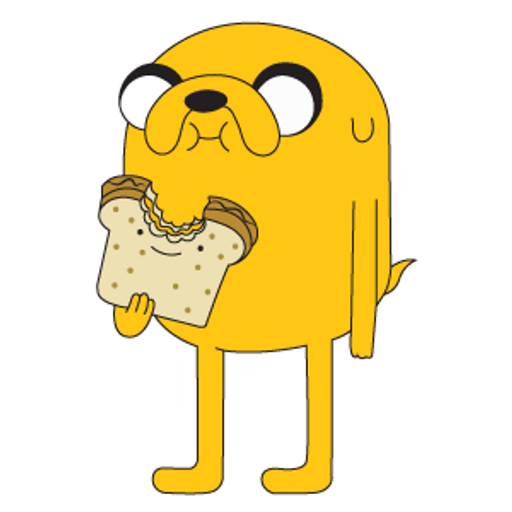

Jake The Dog
Jake the Dog is Finn’s loyal best friend, adventuring partner, and adoptive brother. Laid-back, witty, and always ready with a joke, Jake brings a calm and comedic balance to Finn’s energetic personality. He often acts as a mentor, giving advice that ranges from surprisingly wise to hilariously questionable. His easygoing outlook on life makes him one of the most beloved characters in Adventure Time.

Jake possesses magical stretchy powers that allow him to change his shape and size at will. He can grow to enormous heights, shrink to the size of a pebble, flatten himself, or transform into practically anything he can imagine. These abilities make him incredibly versatile in battles and adventures, providing creative solutions in the most unexpected situations. Despite their silliness, Jake’s powers often save the day in ways only he could pull off.
